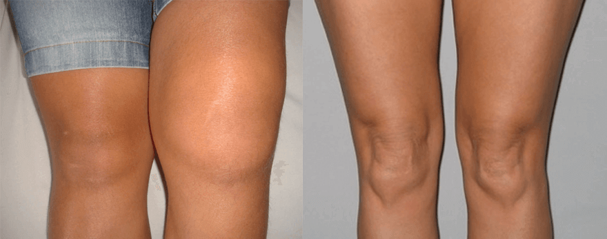

Вылечите суставы, пока вы не сели в инвалидное кресло! Запомните: артрит и артроз разрушают хрящевую ткань за 3 года
Внимание! Если у вас болят суставы, в этом блоге Вы найдете мои рекомендации, по комплесному восстановлению и омоложению суставов. Не идите на поводу у врачей-мошенников, которые стараются вам выписать самое дорогое и неэффективное лекарство. (С) Анато́лий Миха́йлович Кашпиро́вский
Хотите Вас удивлю? По статистике после 25 лет у каждого из нас начинаются необратимые процессы разрушения суставов!
У 87% НАСЕЛЕНИЯ УЖЕ ИМЕЕТСЯ ДИСТРОФИЯ И ИСТОНЧЕНИЕ ТКАНЕЙ.
Откуда, спросите Вы?
Сидите по 8 часов на работе за столом? А тем временем ваши межпозвоночные диски испытывают колоссальную перегрузку и просто рассыпаются!
Бегаете по утрам или ходите в спортзал тягать веса? Молодцы. А ваш тренер рассказал вам, что никакая правильная техника не спасет ваши колени, поясницу, локти, плечи? И каждый глубокий присед чреват полным стиранием коленных суставов даже если Вы поднимаете сумки с продуктами в магазине.
К слову ваша генетика тоже против вас! Уверен, каждый из ваших родственников к концу жизни ходил полусогнутым и страдал от болей в суставах, поздравляю - с 90% вероятностью Вы кончите так же.

Спросите, к чему я тут вас запугиваю?
Все мы знаем, что если заболел – надо идти к врачу, он знает про болезни много, он будет их лечить, это его работа. Но в основном, что делают сегодня врачи? Они сначала делают из человека хронического больного, а дальше он благополучно умирает. Это на сегодня самое большое "достижение" нашей Украинской медицины.
Я сам был, что называется, на грани. Мог стать инвалидом, лишиться подвижности ног. Но мне удалось исцелить себя без помощи врачей. Наверно, современные медики удивились бы, но я чувствую себя отлично, хотя мне уже и 80 лет!
Я убедился на практике не раз, что так как мы — дети природы, то и средства лечения надо искать в ней: использовать для лечения и предупреждения болезней суставов травы, цветы, корешки. Конечно, кроме экстренных случаев, когда требуется срочная медицинская помощь, например, при инфаркте, инсульте, переломах.
Если человек сидит на таблетках, а отказ от препарата вызывает новые приступы болей, отеков и недомогания. Вывод напрашивается сам. Только я знаю реальные цифры. За этими рецептами более 1 млн. покалеченных жизней за 12 лет! Люди, большая часть из которых пенсионеры, обращались к врачам за помощью. А те вместо того, чтобы лечить, наживались на страданиях людей, заведомо зная, что выписанные ими средства не помогут. И такая практика распространена не только в коммерческих, но и, что страшнее всего – в государственных клиниках.
95% ПРЕПАРАТОВ ПРОДАВАЕМЫХ В АПТЕКАХ ЯВЛЯЮТСЯ ПУСТЫШКАМИ ИЛИ ПОПРОСТУ ВРЕДЯТ ЗДОРОВЬЮ.
Расскажу про свой горький опыт.
В 55 лет я на собственной шкуре испытал, что такое артроз - напрочь лишиться подвижности коленого сустава и продолжительное время передвигался на костылях с невыносимой болью.
Всего я перепробовал 47 способов лечения суставов, на это ушло 9 лет и 7 месяцев. Были и полугодичные попытки лечения пиявками, и двухмесячные курсы "супер-препаратами", заказанными из-за границы, все было тщетно, пока я не обратился к истокам, к апитерапии, к сибирским богатствам!
Скажу честно, я не изобрел велосипед. Все просто: массаж и препарат на основе продуктов пчеловодства, собранных в чистой глубинке, плюс змеиный яд и панты маралов . Все очень просто, но зато через неделю лечения, я уже ходил в магазин, сам себя обслуживал. А секрет прост: делая все эти манипуляции я восстановил кровообращение и поступление синовиальной жидкости в коленный сустав, которой раньше катастрофически не хватало моему колену.
Как видно на моих ренгеновских снимках, хрящ полностью восстановился. Полное восстановление заняло у меня - 2 месяца.
Естественно. Не буду говорить ерунду, как многие любят, что это они сами разработали рецепт. Рецепт разработали наши предки, экспериментируя с дарами природы. А я лишь поучаствовал в производстве и исследовании препарата который назывался "Артрилекс", чтобы быть уверенным в качестве продукта!
Я десятки лет работал в космонавтике, в сфере медицины и здравоохранения. К тому же я всегда надеялся, что мои медицинские разработки внедрят здравомыслящие люди. И действительно, после проведения всех испытаний было получено разрешение на внедрение препарата в систему медицины.
Но вскоре Советский Союз распался. А новая организация потребовала проведения тех же самых испытаний, потому что результаты, полученные в советских учреждениях, видите ли, недействительны. Это же нонсенс! Но я уже ушёл на пенсию, и на повторные испытании у меня не было ни сил, ни финансовых средств. А помогать мне никто не хотел. Тогда я понял, что подрываю существующие методы и средства лечения людей, которые на самом деле калечат их, но зато кормят производителей химических лекарств.
Вообще этот препарат был разработан в СССР специально для поддержки здоровья космонавтов, военных и выступающих спортсменов-атлетов! Такие капсулы должны был выписываться поликлиниками и продаваться во всех аптеках страны. Испытания этого препарата в Институте ревматологии АМН СССР показали превосходные результаты: 7 849 человек полностью излечились от своих болячек, это более 93% всех испытуемых, 6.5% почувствовали существенные улучшения, и лишь у 0.5% не было замечено улучшений. Но из-за проблем внутри страны проект отложили в долгий ящик.
Но вот прошло время и наконец-то наступил долгожданный день, когда этот препарат опять появился в Украине!
Состав "Artrilex" очень мощный: компоненты, которые помогают препарату проникнуть МАКСИМАЛЬНО глубоко в поврежденные хрящевые ткани!
Вот короткий список того, что умеет этот препарат:
1. Блокирует боль с помощью сабельника;
2. Работает постоянно, а не только в момент нанесения;
3. Снимает воспаление благодаря сабелии;
4. Защищает сустав от разрушения - хондроитин;
5. 100% натуральный состав!
Хочу особо обратить Ваше внимание, что капсулы "Артрилекс" восстанавливают суставы даже в глубокой старости, именно поэтому он рекомендован пенсионерам. Также он может использоваться для профилактики проблем с суставами и при травмах.
Я очень надеюсь, что и в Украине найдутся люди, которые хотят, чтобы их дети и внуки жили в добром здравии на возрожденной земле, а не умирали от болезней в отравленной среде. Верю, что когда-нибудь внедрят мою систему лечения суставов в государственные клиники!
Артрилекс – получил награду «Прорыв 2019 года» . Производители решили раздать ограниченную партию Артрилекс абсолютно бесплатно. Каждый человек может выписать Артрилекс абсолютно бесплатно через форму, которая расположена ниже(вписав имя и номер телефона) или узнать дополнительную информацию (ссылка в конце статьи) на официальном сайте препарата, созданным НИИ Ревматологии. Причем сейчас это можно сделать бесплатно. Артрилекс раздается всем желающим полностью на безвозмездной основе.
Единственное, только в самом НИИ Ревматологии нам сказали, что партия препарата, которая предназначалась для раздачи населению бесплатно, уже практически закончилась. Количество заявок на препарат в последнее время увеличивается с геометрической прогрессией.
Однако Артрилекс еще есть в наличии, и если вы закажите его прямо сейчас, возможно еще успеете попасть в число счастливчиков, которые успеют вылечить суставы раз и навсегда с помощью этого уникального препарата.


